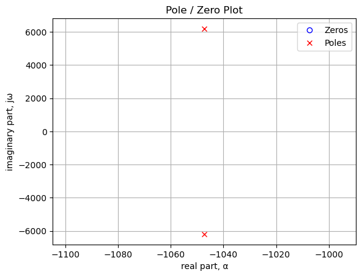
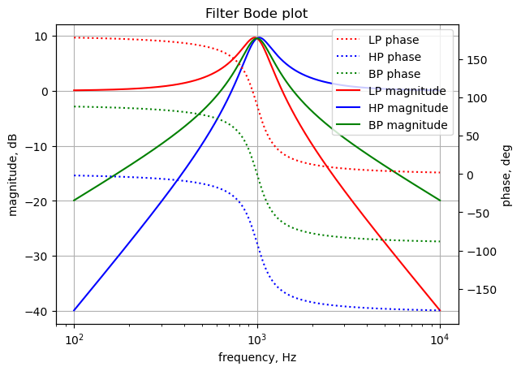

import os
from sympy import *
import numpy as np
from tabulate import tabulate
from scipy import signal
import matplotlib.pyplot as plt
import pandas as pd
import SymMNA
from IPython.display import display, Markdown, Math, Latex
init_printing()23 State Variable Filter
23.1 Introduction
A state variable filter using opamps was first described by Tow (1968). The filter shown in the schematic below has low pass (LP), high pass (HP) and band pass (BP) outputs. For certain combinations of resistors and capacitors, the natural frequency and Q of filter can be independently determined. All the element values are assigned a value of 1, since they will be assigned as part of the filter design process.
23.2 Circuit description
The circuit in Figure 23.1 has 10 branches and eight nodes. There are two capacitors, seven resistors in the circuit and three Op Amps. The circuit has a low pass, a high pass and band pass outputs.
23.3 Circuit analysis
The circuit was drawn using LTSpice and the netlist was pasted into the code. Network equations were generated using the smna() function and a symbolic solution for the equations was obtained. The characteristic equation was obtained and coeficients of the equation were extracted so that the symbols could be equated to parameters known as Q and damping ratio. These were symplified by by letting R = R1 = R3 = R4 = R5 = R6 = R7 and C = C1 = C2. By letting C = 0.1\(\mu\)F, R was solved for to get a natural frequency of 1kHz. R2 was then solved for to get a Q of 3. Substituting component values into the equations, the filter was analyzed to obtain frequency and phase plots, impulse and step response and group delay.
The net list for the filter is:
R3 3 1 1
R6 6 4 1
R7 8 7 1
R5 4 3 1
R2 7 5 1
C1 7 6 1
C2 2 8 1
O1 3 5 4
O2 6 0 7
V1 1 0 1
O3 8 0 2
R1 5 0 1
R4 2 3 1The following Python modules are used.
23.4 Load the net list
net_list = '''
R3 3 1 1
R6 6 4 1
R7 8 7 1
R5 4 3 1
R2 7 5 1
C1 7 6 1
C2 2 8 1
O1 3 5 4
O2 6 0 7
V1 1 0 1
O3 8 0 2
R1 5 0 1
R4 2 3 1
'''23.5 Call the symbolic modified nodal analysis function
report, network_df, i_unk_df, A, X, Z = SymMNA.smna(net_list)Display the equations
# reform X and Z into Matrix type for printing
Xp = Matrix(X)
Zp = Matrix(Z)
temp = ''
for i in range(len(X)):
temp += '${:s}$<br>'.format(latex(Eq((A*Xp)[i:i+1][0],Zp[i])))
Markdown(temp)\(I_{V1} + \frac{v_{1}}{R_{3}} - \frac{v_{3}}{R_{3}} = 0\)
\(- C_{2} s v_{8} + I_{O3} + v_{2} \left(C_{2} s + \frac{1}{R_{4}}\right) - \frac{v_{3}}{R_{4}} = 0\)
\(v_{3} \cdot \left(\frac{1}{R_{5}} + \frac{1}{R_{4}} + \frac{1}{R_{3}}\right) - \frac{v_{4}}{R_{5}} - \frac{v_{2}}{R_{4}} - \frac{v_{1}}{R_{3}} = 0\)
\(I_{O1} + v_{4} \cdot \left(\frac{1}{R_{6}} + \frac{1}{R_{5}}\right) - \frac{v_{6}}{R_{6}} - \frac{v_{3}}{R_{5}} = 0\)
\(v_{5} \cdot \left(\frac{1}{R_{2}} + \frac{1}{R_{1}}\right) - \frac{v_{7}}{R_{2}} = 0\)
\(- C_{1} s v_{7} + v_{6} \left(C_{1} s + \frac{1}{R_{6}}\right) - \frac{v_{4}}{R_{6}} = 0\)
\(- C_{1} s v_{6} + I_{O2} + v_{7} \left(C_{1} s + \frac{1}{R_{7}} + \frac{1}{R_{2}}\right) - \frac{v_{8}}{R_{7}} - \frac{v_{5}}{R_{2}} = 0\)
\(- C_{2} s v_{2} + v_{8} \left(C_{2} s + \frac{1}{R_{7}}\right) - \frac{v_{7}}{R_{7}} = 0\)
\(v_{1} = V_{1}\)
\(v_{3} - v_{5} = 0\)
\(v_{6} = 0\)
\(v_{8} = 0\)
23.5.1 Build the network equation matrix
# Put matrices into SymPy
X = Matrix(X)
Z = Matrix(Z)
NE_sym = Eq(A*X,Z)
NE_sym\(\displaystyle \left[\begin{matrix}I_{V1} + \frac{v_{1}}{R_{3}} - \frac{v_{3}}{R_{3}}\\- C_{2} s v_{8} + I_{O3} + v_{2} \left(C_{2} s + \frac{1}{R_{4}}\right) - \frac{v_{3}}{R_{4}}\\v_{3} \cdot \left(\frac{1}{R_{5}} + \frac{1}{R_{4}} + \frac{1}{R_{3}}\right) - \frac{v_{4}}{R_{5}} - \frac{v_{2}}{R_{4}} - \frac{v_{1}}{R_{3}}\\I_{O1} + v_{4} \cdot \left(\frac{1}{R_{6}} + \frac{1}{R_{5}}\right) - \frac{v_{6}}{R_{6}} - \frac{v_{3}}{R_{5}}\\v_{5} \cdot \left(\frac{1}{R_{2}} + \frac{1}{R_{1}}\right) - \frac{v_{7}}{R_{2}}\\- C_{1} s v_{7} + v_{6} \left(C_{1} s + \frac{1}{R_{6}}\right) - \frac{v_{4}}{R_{6}}\\- C_{1} s v_{6} + I_{O2} + v_{7} \left(C_{1} s + \frac{1}{R_{7}} + \frac{1}{R_{2}}\right) - \frac{v_{8}}{R_{7}} - \frac{v_{5}}{R_{2}}\\- C_{2} s v_{2} + v_{8} \left(C_{2} s + \frac{1}{R_{7}}\right) - \frac{v_{7}}{R_{7}}\\v_{1}\\v_{3} - v_{5}\\v_{6}\\v_{8}\end{matrix}\right] = \left[\begin{matrix}0\\0\\0\\0\\0\\0\\0\\0\\V_{1}\\0\\0\\0\end{matrix}\right]\)
# turn the free symbols into SymPy variables
var(str(NE_sym.free_symbols).replace('{','').replace('}',''))\(\displaystyle \left( C_{2}, \ R_{7}, \ V_{1}, \ C_{1}, \ R_{2}, \ R_{1}, \ R_{5}, \ I_{O1}, \ v_{4}, \ v_{5}, \ s, \ v_{2}, \ I_{V1}, \ v_{1}, \ I_{O3}, \ I_{O2}, \ R_{6}, \ v_{3}, \ R_{3}, \ v_{8}, \ v_{6}, \ v_{7}, \ R_{4}\right)\)
23.6 Symbolic solution
The symbolic solution of the network equations takes about 50 seconds to solve on my laptop (i3-8130U CPU @ 2.20GHz).
U_sym = solve(NE_sym,X)Display the symbolic solution
temp = ''
for i in U_sym.keys():
temp += '${:s} = {:s}$<br>'.format(latex(i),latex(U_sym[i]))
Markdown(temp)\(v_{1} = V_{1}\)
\(v_{2} = \frac{- R_{1} R_{4} R_{5} V_{1} - R_{2} R_{4} R_{5} V_{1}}{C_{1} C_{2} R_{1} R_{3} R_{4} R_{6} R_{7} s^{2} + C_{1} C_{2} R_{2} R_{3} R_{4} R_{6} R_{7} s^{2} + C_{2} R_{1} R_{3} R_{4} R_{7} s + C_{2} R_{1} R_{3} R_{5} R_{7} s + C_{2} R_{1} R_{4} R_{5} R_{7} s + R_{1} R_{3} R_{5} + R_{2} R_{3} R_{5}}\)
\(v_{3} = \frac{C_{2} R_{1} R_{4} R_{5} R_{7} V_{1} s}{C_{1} C_{2} R_{1} R_{3} R_{4} R_{6} R_{7} s^{2} + C_{1} C_{2} R_{2} R_{3} R_{4} R_{6} R_{7} s^{2} + C_{2} R_{1} R_{3} R_{4} R_{7} s + C_{2} R_{1} R_{3} R_{5} R_{7} s + C_{2} R_{1} R_{4} R_{5} R_{7} s + R_{1} R_{3} R_{5} + R_{2} R_{3} R_{5}}\)
\(v_{4} = \frac{- C_{1} C_{2} R_{1} R_{4} R_{5} R_{6} R_{7} V_{1} s^{2} - C_{1} C_{2} R_{2} R_{4} R_{5} R_{6} R_{7} V_{1} s^{2}}{C_{1} C_{2} R_{1} R_{3} R_{4} R_{6} R_{7} s^{2} + C_{1} C_{2} R_{2} R_{3} R_{4} R_{6} R_{7} s^{2} + C_{2} R_{1} R_{3} R_{4} R_{7} s + C_{2} R_{1} R_{3} R_{5} R_{7} s + C_{2} R_{1} R_{4} R_{5} R_{7} s + R_{1} R_{3} R_{5} + R_{2} R_{3} R_{5}}\)
\(v_{5} = \frac{C_{2} R_{1} R_{4} R_{5} R_{7} V_{1} s}{C_{1} C_{2} R_{1} R_{3} R_{4} R_{6} R_{7} s^{2} + C_{1} C_{2} R_{2} R_{3} R_{4} R_{6} R_{7} s^{2} + C_{2} R_{1} R_{3} R_{4} R_{7} s + C_{2} R_{1} R_{3} R_{5} R_{7} s + C_{2} R_{1} R_{4} R_{5} R_{7} s + R_{1} R_{3} R_{5} + R_{2} R_{3} R_{5}}\)
\(v_{6} = 0\)
\(v_{7} = \frac{C_{2} R_{1} R_{4} R_{5} R_{7} V_{1} s + C_{2} R_{2} R_{4} R_{5} R_{7} V_{1} s}{C_{1} C_{2} R_{1} R_{3} R_{4} R_{6} R_{7} s^{2} + C_{1} C_{2} R_{2} R_{3} R_{4} R_{6} R_{7} s^{2} + C_{2} R_{1} R_{3} R_{4} R_{7} s + C_{2} R_{1} R_{3} R_{5} R_{7} s + C_{2} R_{1} R_{4} R_{5} R_{7} s + R_{1} R_{3} R_{5} + R_{2} R_{3} R_{5}}\)
\(v_{8} = 0\)
\(I_{V1} = \frac{- C_{1} C_{2} R_{1} R_{4} R_{6} R_{7} V_{1} s^{2} - C_{1} C_{2} R_{2} R_{4} R_{6} R_{7} V_{1} s^{2} - C_{2} R_{1} R_{4} R_{7} V_{1} s - C_{2} R_{1} R_{5} R_{7} V_{1} s - R_{1} R_{5} V_{1} - R_{2} R_{5} V_{1}}{C_{1} C_{2} R_{1} R_{3} R_{4} R_{6} R_{7} s^{2} + C_{1} C_{2} R_{2} R_{3} R_{4} R_{6} R_{7} s^{2} + C_{2} R_{1} R_{3} R_{4} R_{7} s + C_{2} R_{1} R_{3} R_{5} R_{7} s + C_{2} R_{1} R_{4} R_{5} R_{7} s + R_{1} R_{3} R_{5} + R_{2} R_{3} R_{5}}\)
\(I_{O1} = \frac{C_{1} C_{2} R_{1} R_{4} R_{5} R_{7} V_{1} s^{2} + C_{1} C_{2} R_{1} R_{4} R_{6} R_{7} V_{1} s^{2} + C_{1} C_{2} R_{2} R_{4} R_{5} R_{7} V_{1} s^{2} + C_{1} C_{2} R_{2} R_{4} R_{6} R_{7} V_{1} s^{2} + C_{2} R_{1} R_{4} R_{7} V_{1} s}{C_{1} C_{2} R_{1} R_{3} R_{4} R_{6} R_{7} s^{2} + C_{1} C_{2} R_{2} R_{3} R_{4} R_{6} R_{7} s^{2} + C_{2} R_{1} R_{3} R_{4} R_{7} s + C_{2} R_{1} R_{3} R_{5} R_{7} s + C_{2} R_{1} R_{4} R_{5} R_{7} s + R_{1} R_{3} R_{5} + R_{2} R_{3} R_{5}}\)
\(I_{O2} = \frac{- C_{1} C_{2} R_{1} R_{4} R_{5} R_{7} V_{1} s^{2} - C_{1} C_{2} R_{2} R_{4} R_{5} R_{7} V_{1} s^{2} - C_{2} R_{1} R_{4} R_{5} V_{1} s - C_{2} R_{2} R_{4} R_{5} V_{1} s - C_{2} R_{4} R_{5} R_{7} V_{1} s}{C_{1} C_{2} R_{1} R_{3} R_{4} R_{6} R_{7} s^{2} + C_{1} C_{2} R_{2} R_{3} R_{4} R_{6} R_{7} s^{2} + C_{2} R_{1} R_{3} R_{4} R_{7} s + C_{2} R_{1} R_{3} R_{5} R_{7} s + C_{2} R_{1} R_{4} R_{5} R_{7} s + R_{1} R_{3} R_{5} + R_{2} R_{3} R_{5}}\)
\(I_{O3} = \frac{C_{2} R_{1} R_{4} R_{5} V_{1} s + C_{2} R_{1} R_{5} R_{7} V_{1} s + C_{2} R_{2} R_{4} R_{5} V_{1} s + R_{1} R_{5} V_{1} + R_{2} R_{5} V_{1}}{C_{1} C_{2} R_{1} R_{3} R_{4} R_{6} R_{7} s^{2} + C_{1} C_{2} R_{2} R_{3} R_{4} R_{6} R_{7} s^{2} + C_{2} R_{1} R_{3} R_{4} R_{7} s + C_{2} R_{1} R_{3} R_{5} R_{7} s + C_{2} R_{1} R_{4} R_{5} R_{7} s + R_{1} R_{3} R_{5} + R_{2} R_{3} R_{5}}\)
23.7 Low Pass
The low pass transfer function.
H_sym_lp = cancel(U_sym[v2]/V1,s)
H_sym_lp\(\displaystyle \frac{- R_{1} R_{4} R_{5} - R_{2} R_{4} R_{5}}{R_{1} R_{3} R_{5} + R_{2} R_{3} R_{5} + s^{2} \left(C_{1} C_{2} R_{1} R_{3} R_{4} R_{6} R_{7} + C_{1} C_{2} R_{2} R_{3} R_{4} R_{6} R_{7}\right) + s \left(C_{2} R_{1} R_{3} R_{4} R_{7} + C_{2} R_{1} R_{3} R_{5} R_{7} + C_{2} R_{1} R_{4} R_{5} R_{7}\right)}\)
sym_num, sym_denom = fraction(H_sym_lp,s) #returns numerator and denominatorsym_num\(\displaystyle - R_{1} R_{4} R_{5} - R_{2} R_{4} R_{5}\)
23.7.1 Characteristic equation
sym_denom\(\displaystyle R_{1} R_{3} R_{5} + R_{2} R_{3} R_{5} + s^{2} \left(C_{1} C_{2} R_{1} R_{3} R_{4} R_{6} R_{7} + C_{1} C_{2} R_{2} R_{3} R_{4} R_{6} R_{7}\right) + s \left(C_{2} R_{1} R_{3} R_{4} R_{7} + C_{2} R_{1} R_{3} R_{5} R_{7} + C_{2} R_{1} R_{4} R_{5} R_{7}\right)\)
Get the coefficients of the Laplace variable, s, from the quadratic equation:
\(as^{2}+bs+c=0\)
a = sym_denom.coeff(s**2)
a\(\displaystyle C_{1} C_{2} R_{1} R_{3} R_{4} R_{6} R_{7} + C_{1} C_{2} R_{2} R_{3} R_{4} R_{6} R_{7}\)
b = sym_denom.coeff(s)
b\(\displaystyle C_{2} R_{1} R_{3} R_{4} R_{7} + C_{2} R_{1} R_{3} R_{5} R_{7} + C_{2} R_{1} R_{4} R_{5} R_{7}\)
To find the c coefficient just subract off \(bs\) and \(cs^2\) from the quadratic equation.
c = sym_denom - b*s - a*s**2
c\(\displaystyle R_{1} R_{3} R_{5} + R_{2} R_{3} R_{5}\)
23.8 Natural frequency and Q factor
The expressions for the natural frequency and Q factor are shown below:
\(\omega _n = \sqrt {\frac {c}{a}}\)
\(Q = \omega _n \frac {a}{b}\)
These xpressions have their orgin in classical mechanics describing harmonic oscillators and are applicable to 2nd order electrical systems.
The damping ratio is defined by the equation:
\(\zeta = \frac {1}{2Q}\)
omega_n = sqrt(c/a)
omega_n\(\displaystyle \sqrt{\frac{R_{1} R_{3} R_{5} + R_{2} R_{3} R_{5}}{C_{1} C_{2} R_{1} R_{3} R_{4} R_{6} R_{7} + C_{1} C_{2} R_{2} R_{3} R_{4} R_{6} R_{7}}}\)
Q = (a/b)*omega_n
Q\(\displaystyle \frac{\sqrt{\frac{R_{1} R_{3} R_{5} + R_{2} R_{3} R_{5}}{C_{1} C_{2} R_{1} R_{3} R_{4} R_{6} R_{7} + C_{1} C_{2} R_{2} R_{3} R_{4} R_{6} R_{7}}} \left(C_{1} C_{2} R_{1} R_{3} R_{4} R_{6} R_{7} + C_{1} C_{2} R_{2} R_{3} R_{4} R_{6} R_{7}\right)}{C_{2} R_{1} R_{3} R_{4} R_{7} + C_{2} R_{1} R_{3} R_{5} R_{7} + C_{2} R_{1} R_{4} R_{5} R_{7}}\)
Simply the expressions for Q and \(\omega _n\) by letting R = R1 = R3 = R4 = R5 = R6 = R7 and C = C1 = C2.
R, C = symbols('R C')simplify = {
R1:R,
R3:R,
R4:R,
R5:R,
R6:R,
R7:R,
C1:C,
C2:C}omega_n_simp = omega_n.subs(simplify).factor()
omega_n_simp\(\displaystyle \sqrt{\frac{1}{C^{2} R^{2}}}\)
Q_simp = Q.subs(simplify).factor()
Q_simp\(\displaystyle \frac{C \sqrt{\frac{1}{C^{2} R^{2}}} \left(R + R_{2}\right)}{3}\)
By inspection Q could be simplified more, because C cancels out, but we will leave it.
Let C = 0.1\(\mu\)F, solve for R to get a natural frequency of 1kHz.
omega_n_simp = omega_n_simp.subs({C:0.1e-6})
omega_n_simp\(\displaystyle 10000000.0 \sqrt{\frac{1}{R^{2}}}\)
Rnew = solve(Eq(omega_n_simp,1e3*2*np.pi),R)
Rnew\(\displaystyle \left[ -1591.54943091895, \ 1591.54943091895\right]\)
Rnew = float(Rnew[1])
Rnew\(\displaystyle 1591.54943091895\)
With R and C chosen,
Q_simp\(\displaystyle \frac{C \sqrt{\frac{1}{C^{2} R^{2}}} \left(R + R_{2}\right)}{3}\)
Substituting C=0.1\(\mu\)F and R = Rnew into Q_simp
Q_simp = Q_simp.subs({C:0.1e-6,R:Rnew})
Q_simp\(\displaystyle 0.00020943951023932 R_{2} + 0.333333333333333\)
Solve for R2 for the desired Q=3.
R2new = solve(Eq(Q_simp,3),R2)
R2new = R2new[0]
R2new\(\displaystyle 12732.3954473516\)
The element values are put into the Python dictionary format so that numerical values can be substituted into the equations.
nominal_component_value = {
V1:1,
R3:Rnew,
R6:Rnew,
R7:Rnew,
R5:Rnew,
R2:R2new,
C1:0.1e-6,
C2:0.1e-6,
R1:Rnew,
R4:Rnew}Q.subs(nominal_component_value)\(\displaystyle 3.0\)
omega_n.subs(nominal_component_value)/(2*np.pi)\(\displaystyle 1000.0\)
damping_ratio = 1/(2*Q.subs(nominal_component_value))
damping_ratio\(\displaystyle 0.166666666666667\)
23.8.1 Numerical solution
# put the element values into the equations
NE = NE_sym.subs(nominal_component_value)Now we can diplay the network equations with values for the components instead of symbols.
NE\(\displaystyle \left[\begin{matrix}I_{V1} + 0.000628318530717959 v_{1} - 0.000628318530717959 v_{3}\\I_{O3} - 1.0 \cdot 10^{-7} s v_{8} + v_{2} \cdot \left(1.0 \cdot 10^{-7} s + 0.000628318530717959\right) - 0.000628318530717959 v_{3}\\- 0.000628318530717959 v_{1} - 0.000628318530717959 v_{2} + 0.00188495559215388 v_{3} - 0.000628318530717959 v_{4}\\I_{O1} - 0.000628318530717959 v_{3} + 0.00125663706143592 v_{4} - 0.000628318530717959 v_{6}\\0.000706858347057704 v_{5} - 7.8539816339745 \cdot 10^{-5} v_{7}\\- 1.0 \cdot 10^{-7} s v_{7} - 0.000628318530717959 v_{4} + v_{6} \cdot \left(1.0 \cdot 10^{-7} s + 0.000628318530717959\right)\\I_{O2} - 1.0 \cdot 10^{-7} s v_{6} - 7.8539816339745 \cdot 10^{-5} v_{5} + v_{7} \cdot \left(1.0 \cdot 10^{-7} s + 0.000706858347057704\right) - 0.000628318530717959 v_{8}\\- 1.0 \cdot 10^{-7} s v_{2} - 0.000628318530717959 v_{7} + v_{8} \cdot \left(1.0 \cdot 10^{-7} s + 0.000628318530717959\right)\\v_{1}\\v_{3} - v_{5}\\v_{6}\\v_{8}\end{matrix}\right] = \left[\begin{matrix}0\\0\\0\\0\\0\\0\\0\\0\\1\\0\\0\\0\end{matrix}\right]\)
Using the SymPy solve function we can solve the system of equations.
U = solve(NE,X)23.8.2 Low pass filter transfer function
H_lp = U[v2]/U[v1]
H_lp.factor()\(\displaystyle - \frac{1.0}{2.53302959105844 \cdot 10^{-8} s^{2} + 5.30516476972986 \cdot 10^{-5} s + 1.0}\)
The SymPy function, factor(), takes a polynomial and factors it into irreducible factors over the rational numbers. Notice that the value is negative, indicating that the filter configuration is inverting.
23.8.2.1 Convert transfer function to SciPy system
In this section we convert the SymPy equations into Numpy format.
Extract the numerator and denominator polynomials so that the system can be defined in SciPy.
H_lp_num, H_lp_denom = fraction(H_lp) #returns numerator and denominatorThe SciPy function, TransferFunction, represents the system as the continuous-time transfer function and takes as inputs the coeeficients of the numerator and denominator polynominals.
# convert symbolic to numpy polynomial
lp_a = np.array(Poly(H_lp_num, s).all_coeffs(), dtype=float)
lp_b = np.array(Poly(H_lp_denom, s).all_coeffs(), dtype=float)
lp_sys = signal.TransferFunction(lp_a,lp_b)23.8.3 High pass filter transfer function
H_hp = U[v4]/U[v1]
H_hp.factor()\(\displaystyle - \frac{2.53302959105844 \cdot 10^{-8} s^{2}}{2.53302959105844 \cdot 10^{-8} s^{2} + 5.30516476972986 \cdot 10^{-5} s + 1.0}\)
H_hp_num, H_hp_denom = fraction(H_hp) #returns numerator and denominator# convert symbolic to numpy polynomial
hp_a = np.array(Poly(H_hp_num, s).all_coeffs(), dtype=float)
hp_b = np.array(Poly(H_hp_denom, s).all_coeffs(), dtype=float)
hp_sys = signal.TransferFunction(hp_a,hp_b)23.8.4 Band pass filter transfer function
H_bp = U[v7]/U[v1]
H_bp.factor()\(\displaystyle \frac{0.000159154943091895 s}{2.53302959105844 \cdot 10^{-8} s^{2} + 5.30516476972986 \cdot 10^{-5} s + 1.0}\)
H_bp_num, H_bp_denom = fraction(H_bp) #returns numerator and denominator# convert symbolic to numpy polynomial
bp_a = np.array(Poly(H_bp_num, s).all_coeffs(), dtype=float)
bp_b = np.array(Poly(H_bp_denom, s).all_coeffs(), dtype=float)
bp_sys = signal.TransferFunction(bp_a,bp_b)23.8.5 Poles and zeros of the low pass transfer function
The poles and zeros of the transfer function can easly be obtained with the following code:
lp_sys_zeros = np.roots(lp_sys.num)
lp_sys_poles = np.roots(lp_sys.den)23.8.5.1 Low pass filter pole zero plot
The poles and zeros of the preamp transfer function are plotted.
plt.plot(np.real(lp_sys_zeros), np.imag(lp_sys_zeros), 'ob', markerfacecolor='none')
plt.plot(np.real(lp_sys_poles), np.imag(lp_sys_poles), 'xr')
plt.legend(['Zeros', 'Poles'], loc=1)
plt.title('Pole / Zero Plot')
plt.xlabel('real part, \u03B1')
plt.ylabel('imaginary part, j\u03C9')
plt.grid()
plt.show()
Poles and zeros of the transfer function plotted on the complex plane. The units are in radian frequency.
Printing these values in Hz.
print('number of zeros: {:d}'.format(len(lp_sys_zeros)))
for i in lp_sys_zeros:
print('{:,.2f} Hz'.format(i/(2*np.pi)))number of zeros: 0print('number of poles: {:d}'.format(len(lp_sys_poles)))
for i in lp_sys_poles:
print('{:,.2f} Hz'.format(i/(2*np.pi)))number of poles: 2
-166.67+986.01j Hz
-166.67-986.01j Hz23.8.6 Stability
By inspecting the plot above, we can tell the filter is stable since all the poles of the transfer function are in the left hand plane.
23.8.7 Bode plot
Use the SciPy function bode to plot the magnitude and phase of the filter. In electrical engineering, a Bode plot is a graph of the frequency response of a system. It is usually a combination of the magnitude (usually in decibels) of the frequency response and the phase shift. As originally conceived by Hendrik Wade Bode in the 1930s, the plot is an asymptotic approximation of the frequency response, using straight line segments. Bode plots are used to assess the stability of systems by finding the gain and phase margins.
x_axis_range = np.logspace(2, 4, 5000, endpoint=True)*2*np.pi
w, lp_mag, lp_phase = lp_sys.bode(w=x_axis_range)
w, hp_mag, hp_phase = hp_sys.bode(w=x_axis_range)
w, bp_mag, bp_phase = bp_sys.bode(w=x_axis_range)
fig, ax1 = plt.subplots()
ax1.set_ylabel('magnitude, dB')
ax1.set_xlabel('frequency, Hz')
# Bode magnitude plot
plt.semilogx(w/(2*np.pi), lp_mag,'-r')
plt.semilogx(w/(2*np.pi), hp_mag,'-b')
plt.semilogx(w/(2*np.pi), bp_mag,'-g')
ax1.tick_params(axis='y')
plt.grid()
# instantiate a second y-axes that shares the same x-axis
ax2 = ax1.twinx()
color = 'k' #'tab:blue'
# Bode phase plot
plt.semilogx(w/(2*np.pi), lp_phase,':r',label='LP phase')
plt.semilogx(w/(2*np.pi), hp_phase,':b',label='HP phase')
plt.semilogx(w/(2*np.pi), bp_phase,':g',label='BP phase')
ax2.set_ylabel('phase, deg',color=color)
ax2.tick_params(axis='y', labelcolor=color)
ax2.plot(np.NaN, np.NaN, '-', color='r', label='LP magnitude')
ax2.plot(np.NaN, np.NaN, '-', color='b', label='HP magnitude')
ax2.plot(np.NaN, np.NaN, '-', color='g', label='BP magnitude')
plt.legend(loc=0)
plt.title('Filter Bode plot')
plt.show()
The Bode plot for the preamplifier is plotted from 100 Hz to 1 kHz.
23.8.8 Low pass filter impulse and step response
Use the SciPy functions impulse and step to plot the impulse and step response of the system.
The impulse and step response of the filter are plotted below. Any linear, time-invariant is completely characterized by its impulse response. The transfer function is the Laplace transform of the impulse response. The impulse response defines the response of a linear time-invariant system for all frequencies.
In electronic engineering and control theory, step response is the time behavior of the outputs of a general system when its inputs change from zero to one in a very short time.
plt.subplots(1,2,figsize=(15, 5))
# using subplot function and creating
# plot one
plt.subplot(1, 2, 1)
# impulse response
t, y = signal.impulse(lp_sys,N=500)
plt.plot(t/1e-3, y)
plt.title('Impulse response')
plt.ylabel('volts')
plt.xlabel('time, msec')
plt.grid()
# using subplot function and creating plot two
plt.subplot(1, 2, 2)
t, y = signal.step(lp_sys,N=500)
plt.plot(t/1e-3, y)
plt.title('Step response')
plt.ylabel('volts')
plt.xlabel('time, msec')
plt.grid()
# show plot
plt.show()
23.8.9 Low pass filter group delay
The following python code calculates and plots group delay. Frequency components of a signal are delayed when passed through a circuit and the signal delay will be different for the various frequencies unless the circuit has the property of being linear phase. The delay variation means that signals consisting of multiple frequency components will suffer distortion because these components are not delayed by the same amount of time at the output of the device.
Group delay: \(\tau _{g}(\omega )=-\frac {d\phi (\omega )}{d\omega }\)
plt.title('group delay')
plt.semilogx(w/(2*np.pi), -np.gradient(lp_phase*np.pi/180)/np.gradient(w),'-',label='group delay')
plt.ylabel('Group delay, sec')
plt.xlabel('Frequency, Hz')
plt.legend()
plt.grid()
plt.show()23.9 Summary
A state variable filter was analized. Component values for a filter of Q=3 and natural frequency of 1kHz were derived. Various typical filter performance plots were generated.